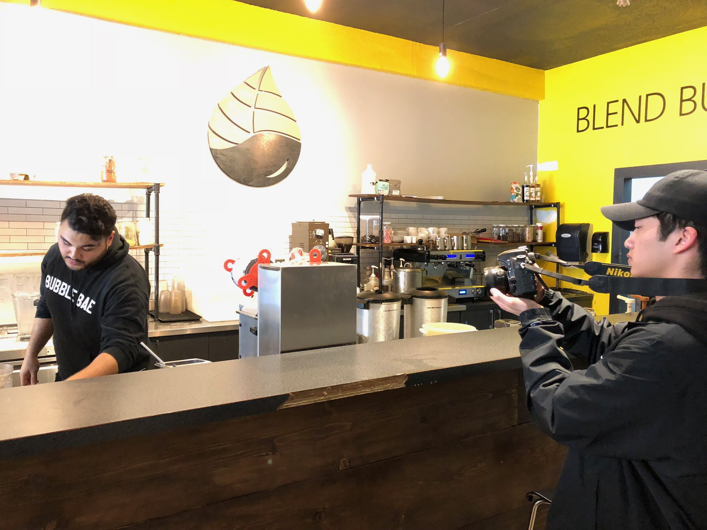
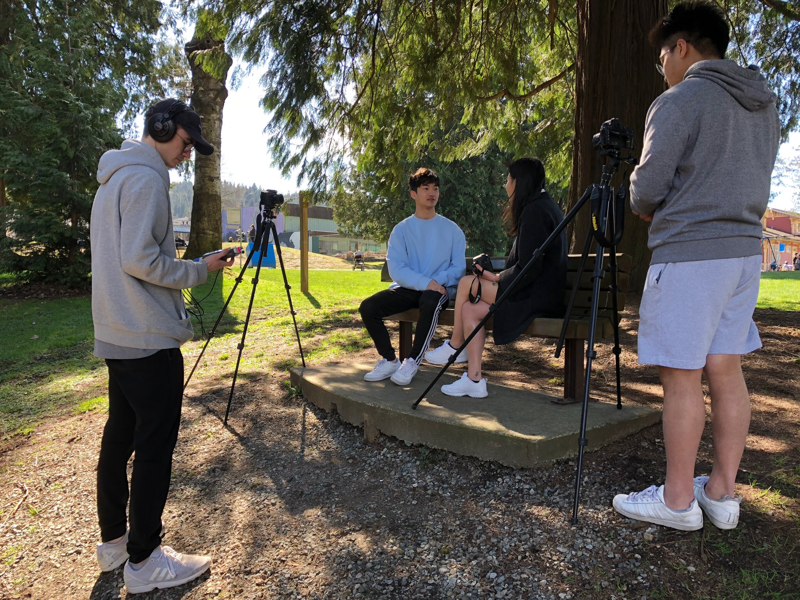
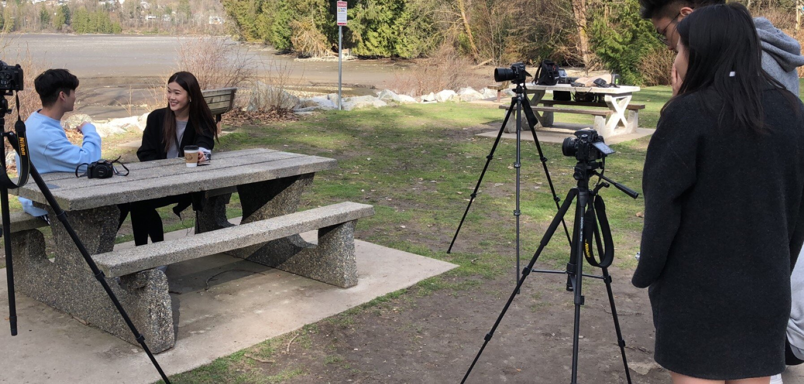

In the beginning, we were having issues with creating a narrative suitable for a 5-6 minute film. All our ideas seemed to blow past this time constraint. This film idea was actually put together at the end of our ideation phase. I pitched the idea to follow someone along for a short journey, rather than a complex plot taking place over several days. Another issue we faced was just the setting of our initial location, Blend Bubble Tea. The shop had a lot of intrusive sounds that interfered with our audio recordings, from blenders in the background to customer interactions - there was always audio interruptions, thus, our first draft was essentially unusable. We decided to start fresh, beginning with a new location, Rocky Point Park.
For this project, we used a 3 camera setup with an 18mm lens to shoot setup and wide shots with, and rotated between 50mm and 85mm lenses that would were used to frame conversations at different perspectives. We used this specifically to reduce the work of editing. By continuously shooting the scene with multiple synced cameras, it made sequencing, particularly cutting on action, easier to edit, as we just needed to locate the time stamp. As we were outside, we didn’t use any light sources beyond natural lighting. This placed some pressure on us, because we weren’t 100% sure how long the sun would stay out, or if there would be any drastic weather changes.
As for the audio, we used wireless lapel mics with an external audio recorder. The unfortunate statics heard are caused by the mics dropping and rubbing against our actors’ clothes. We were limited to this only, as there was a lack of equipment available to rent. The lapel mic was not particularly good at recording the natural background noise of our location, but the audio recorder worked fine by itself.
The biggest issue we faced was a lack of actors. On the day of shooting, we had 2 no-show actors, thus, we had to double up roles to include acting, specifically Ashley and Adrian. While filming, I found the character portrayal too awkward compared to our character concepts. After filming a few scenes, I decided to give our actors more freedom in how they spoke, and used the script to frame the conversational flow. This, in combination with them becoming more familiar with one another, allowed dialogue to flow to become more conversational than it did reading off a script.
Looking back I can see a lack in narrative depth and seemed static, because of our camera setup. Rather than keeping cameras static on fixed angles, playing with camera techniques to highlight key moments might have made the project seem more dynamic. I can also see areas that can be better sequenced for comedic purposes. However, I personally consider this project a success. Heading into the project, our goal wasn’t necessarily to win, but create something we would have fun making, and despite the issues that came up, we ultimately created a project that suited us, as we were able to add our personality traits into our work.